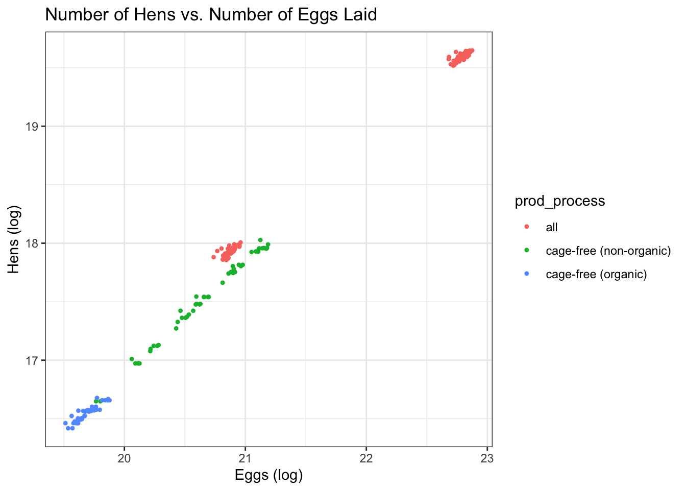
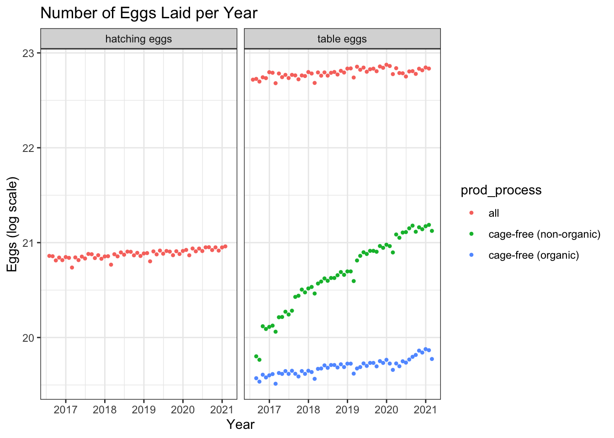

Loading required package: timechange
Attaching package: 'lubridate'
The following objects are masked from 'package:base':
date, intersect, setdiff, union
Attaching package: 'rpart'
The following object is masked from 'package:dials':
prune
library(glmnet)
Loading required package: Matrix
Attaching package: 'Matrix'
The following objects are masked from 'package:tidyr':
expand, pack, unpack
Loaded glmnet 4.1-7
library(rpart.plot)library(vip)
Attaching package: 'vip'
The following object is masked from 'package:utils':
vi
load data
data = tidytuesdayR::tt_load('2023-04-11')
--- Compiling #TidyTuesday Information for 2023-04-11 ----
--- There are 2 files available ---
--- Starting Download ---
Downloading file 1 of 2: `egg-production.csv`
Downloading file 2 of 2: `cage-free-percentages.csv`
--- Download complete ---
summary(data)
Length Class Mode
egg-production 6 spec_tbl_df list
cage-free-percentages 4 spec_tbl_df list
#format into dataframeseggData = data[["egg-production"]][, 1:5] #save without the source as it is not importantcagefreeData = data[["cage-free-percentages"]][, 1:3] #save without the source as it is not important
skim(eggData)
Data summary
Name
eggData
Number of rows
220
Number of columns
5
_______________________
Column type frequency:
character
2
Date
1
numeric
2
________________________
Group variables
None
Variable type: character
skim_variable
n_missing
complete_rate
min
max
empty
n_unique
whitespace
prod_type
0
1
10
13
0
2
0
prod_process
0
1
3
23
0
3
0
Variable type: Date
skim_variable
n_missing
complete_rate
min
max
median
n_unique
observed_month
0
1
2016-07-31
2021-02-28
2018-11-15
56
Variable type: numeric
skim_variable
n_missing
complete_rate
mean
sd
p0
p25
p50
p75
p100
hist
n_hens
0
1
110839873
124121204
13500000
17284500
59939500
125539250
341166000
▇▁▁▁▂
n_eggs
0
1
2606667580
3082457619
298074240
423962023
1154550000
2963010996
8601000000
▇▁▁▁▂
str(cagefreeData)
tibble [96 × 3] (S3: tbl_df/tbl/data.frame)
$ observed_month: Date[1:96], format: "2007-12-31" "2008-12-31" ...
$ percent_hens : num [1:96] 3.2 3.5 3.6 4.4 5.4 6 5.9 5.7 8.6 9.9 ...
$ percent_eggs : num [1:96] NA NA NA NA NA NA NA NA NA NA ...
###Explore Egg Data
#table of the egg datatibble(eggData)
# A tibble: 220 × 5
observed_month prod_type prod_process n_hens n_eggs
<date> <chr> <chr> <dbl> <dbl>
1 2016-07-31 hatching eggs all 57975000 1147000000
2 2016-08-31 hatching eggs all 57595000 1142700000
3 2016-09-30 hatching eggs all 57161000 1093300000
4 2016-10-31 hatching eggs all 56857000 1126700000
5 2016-11-30 hatching eggs all 57116000 1096600000
6 2016-12-31 hatching eggs all 57750000 1132900000
7 2017-01-31 hatching eggs all 57991000 1123400000
8 2017-02-28 hatching eggs all 58286000 1014500000
9 2017-03-31 hatching eggs all 58735000 1128500000
10 2017-04-30 hatching eggs all 59072000 1097200000
# … with 210 more rows
Egg Production Data Dictionary
Variable
Class
Description
observed_month
double
Month in which report observations are collected,Dates are recorded in ISO 8601 format YYYY-MM-DD
prod_type
character
type of egg product: hatching, table eggs
prod_process
character
type of production process and housing: cage-free (organic), cage-free (non-organic), all. The value ‘all’ includes cage-free and conventional housing.
n_hens
double
number of hens produced by hens for a given month-type-process combo
n_eggs
double
number of eggs producing eggs for a given month-type-process combo
Plot the data to explore
#Plot the data # Relationship between the number of eggs laid and the number of hens ggplot() +geom_point(data = eggData, aes(x = n_eggs, y = n_hens, color = prod_process), shape =20) +theme_bw()+ggtitle("Number of Hens vs. Number of Eggs Laid") +labs(x ="Eggs", y ="Hens")+facet_wrap(.~prod_type)
Plot the number of eggs hatched by year
#Separate by the product type ggplot()+geom_point(aes(x=observed_month, y= n_eggs, group=prod_process, color=prod_process), data=eggData,shape =20)+theme_bw()+ggtitle("Number of Eggs Laid per Year") +labs(x ="Eggs", y ="Year")+facet_wrap(.~prod_type)

Plot the number of eggs hatched by year
#No separation ggplot()+geom_point(aes(x=observed_month, y= n_eggs, group=prod_process, color=prod_process), data=eggData,shape =20)+theme_bw()+ggtitle("Number of Eggs Laid per Year") +labs(x ="Eggs", y ="Year")
2 Question/Hypothesis
This will determine the outcome of interest and, if applicable, main predictor(s) of interest.
ggplot() +geom_point(data = eggData, aes(x = n_hens, y = n_eggs, color = prod_process), shape =19) +ggtitle("Laying Efficency", subtitle ="Number of hens vs number of eggs laid") +labs(x ="Hens", y ="Eggs") +xlim(0, 70000000) +ylim(0, 1700000000)
ggplot() +geom_line(data = eggData, aes(x = observed_month, y = n_eggs, color = prod_process)) +ggtitle("Eggs Production over time", subtitle ="") +labs(x ="Time", y ="Eggs")

3 Preprocess, Clean, Split
4 Fit ML models
Fit at least 4 different ML models to the data using the tidymodels framework we practiced. Use the CV approach for model training/fitting. Explore the quality of each model by looking at performance, residuals, uncertainty, etc. All of this should still be evaluated using the training/CV data. You can of course recycle code from the previous exercise, but I also encourage you to explore further, e.g. try different ML models or use different metrics. You might have to do that anyway, depending on your question/outcome.
5 Model Selection
Based on the model evaluations, decide on one model you think is overall best. Explain why. It doesn’t have to be the model with the best performance. You make the choice, just explain why you picked the one you picked.
6 Evaluate Selected Model
As a final, somewhat honest assessment of the quality of the model you chose, evaluate it (performance, residuals, uncertainty, etc.) on the test data. This is the only time you are allowed to touch the test data, and only once. Report model performance on the test data.
7 Summary
Summarize everything you did and found in a discussion. Of course, your Rmd file should contain commentary/documentation on everything you do for each step.